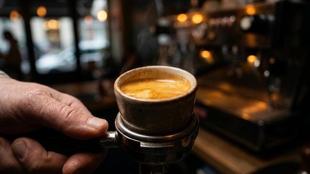

Changing the words re-records the whole narration.
Edited · regenerates this scene's image and motion when you apply changes.
About $0.01 and 6 minutes. Version 3 stays exactly as it is.
Nothing restarts on its own. You can close this and keep editing.

reel-video.mp4 · 108 MB · 00:59 · 1080p